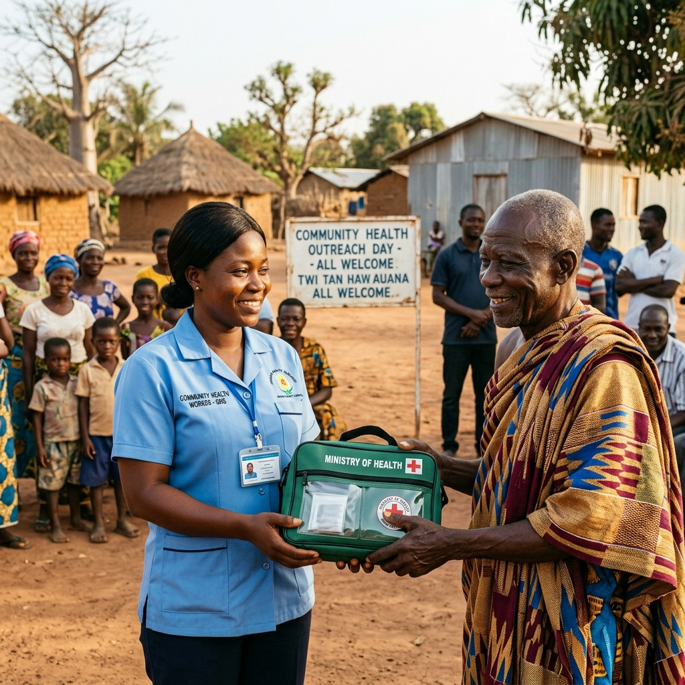
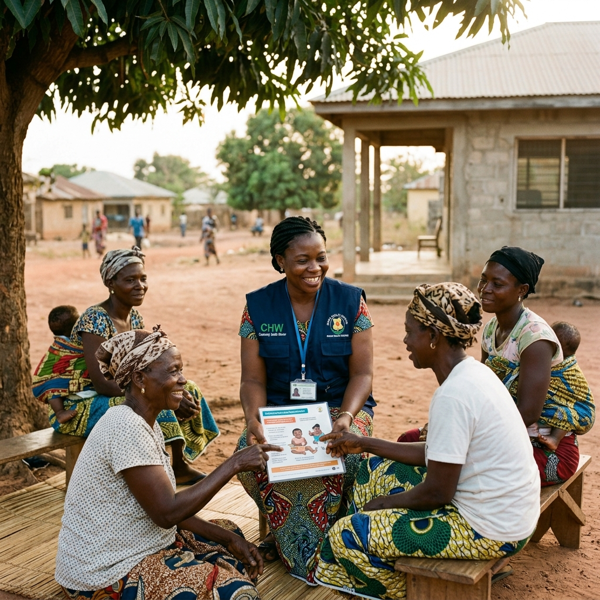

Œuvres Sociales
Au-delà de son appui technique, DAVYCAS International agit aussi sur le terrain pour soutenir les populations vulnérables, renforcer l’espoir et contribuer au bien-être communautaire.

Redonner espoir et sourire aux communautés
Au-delà de son soutien technique, DAVYCAS intervient dans le domaine social. À travers son credo “Nul n’a le droit d’être heureux tout seul”, l’organisation entend, par son action sur le terrain, redonner de l’espoir et du sourire à celles et ceux qui sont dans le besoin.
Solidarité
Soutien aux personnes et communautés vulnérables à travers des actions concrètes sur le terrain.
Redevabilité
Valorisation des populations ayant participé aux études et initiatives de santé publique.
Impact communautaire
Redistribution d’une partie des bénéfices des interventions au profit d’actions sociales utiles.
Des actions concrètes auprès des populations
Une partie importante de l’action de DAVYCAS est réservée au volet social. L’organisation a notamment accompagné des activités de restitution des résultats d’études de portage des germes méningés dans 16 villages des districts sanitaires de Kaya et Ouahigouya en novembre 2018.
Ces activités ont été accompagnées de remises de lots de médicaments et d’autres dons en nature, en guise de remerciement et de reconnaissance aux populations ayant participé aux études.

Nos domaines d'action
Dons en nature
Remise de lots, produits essentiels, médicaments ou appuis matériels selon les besoins identifiés sur le terrain.
Soutien aux structures de santé
Contribution à l’amélioration de certaines structures sanitaires et appui aux initiatives locales de santé.
Appui aux populations vulnérables
Actions orientées vers les communautés, les enfants, les familles et les personnes en situation de vulnérabilité.
Reconnaissance communautaire
Actions de remerciement auprès des populations ayant contribué aux études, enquêtes et activités de santé publique.
Investir dans le bien-être local
Les bénéfices engendrés par certaines interventions sont redistribués aux populations des couches vulnérables. Cette approche s’illustre notamment par des actions de réhabilitation de structures de santé, comme le centre de santé de Golmidou dans le district sanitaire de Boussé, ainsi que par d’autres initiatives sociales annoncées dans les mois et années à venir.
Identifier les besoins
Mobiliser les ressources
Agir auprès des communautés
Quelques images de terrain


Des actions sociales pour renforcer la confiance et la solidarité
Espoir retrouvé
Communautés accompagnées
Structures soutenues
Redevabilité renforcée
Vous souhaitez soutenir une action sociale ?
DAVYCAS International développe des actions sociales concrètes en faveur des communautés vulnérables et des structures de santé, avec une approche fondée sur la solidarité, la redevabilité et l’impact local.